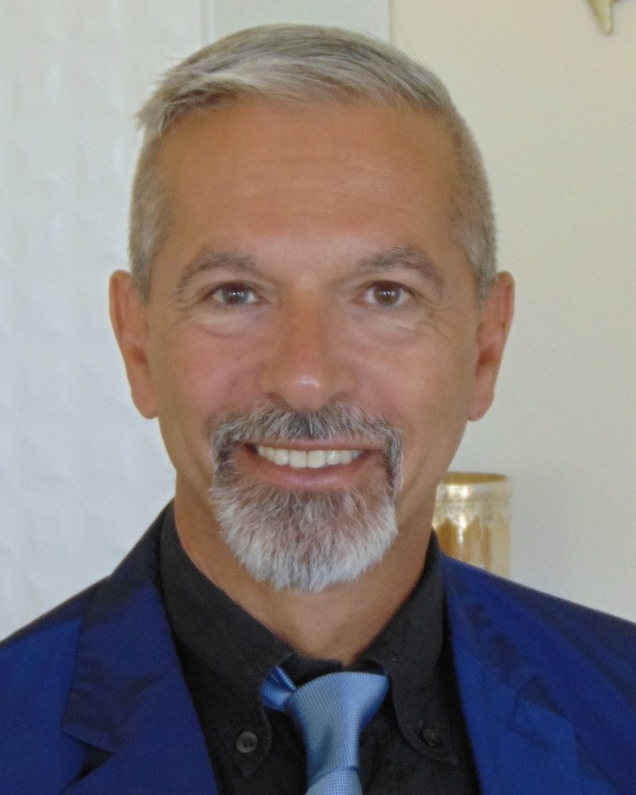

National Coalition of Independent Scholars, Brattleboro, VT, USA

The Orchestrated Objective Reduction (Orch OR) theory proposes that consciousness emerges from quantum computations within neuronal microtubules, where Casimir-Lifshitz forces arising from quantum vacuum fluctuations inside the microtubule lumen (≈20 atmospheres) can influence tubulin conformational dynamics and sustain quantum coherence. This study synthesizes experimental and theoretical findings on the chanting of the Daimoku (Nam-Myoho-Renge-Kyo) in Nichiren Shoshu Buddhist liturgy, demonstrating how sacred sound, respiration, and phononic dynamics modulate these quantum-vacuum effects across scales—from the single tubulin dimer to the entire brain—while also incorporating natural radioactivity as an external correlate of the practice. Spectral analysis of solemn Daimoku chanting identifies prominent acoustic peaks at 8 Hz, 116 Hz, and the Solfeggio frequencies (including the dominant 528 Hz), superimposed on a characteristic respiratory cycle (rapid inhalation ≈0.05 Hz, prolonged exhalation). These vibrations induce nanometric displacements in tubulin structures. For a single tubulin dimer (effective intra-molecular distance a ≈ 1 nm), the 528 Hz acoustic displacement yields a relative Casimir pressure modulation of ≈ –15.7 %. When integrated with the documented 18.4 % volumetric expansion of cortico-meningeal thickness during prolonged expiration, the modulation reaches –23.2 %. Scaling to the whole brain (N ≈ 10²⁰ tubulin dimers), the collective phenomenon produces a rhythmic, macroscopic “pumping” of quantum vacuum fluctuations synchronized with the chanting–breathing cycle, quantitatively described by: ΔP{brain} / P{brain} ≈ –4 (δa{acoustic}/a + δa{respiratory}/a) × N, resulting in an oscillatory change on the order of 20 % across the microtubular network. An independent geometric analysis, extending the amplituhedron formalism analogically to the positive Grassmannian Gr(2,13), shows that the same respiratory-induced cortical thickness variation modulates the volume of a 22-dimensional polytope governing phononic scattering amplitudes by 18.4 % at 528 Hz. This volumetric “breathing” amplifies coherent phonon flux and facilitates transitions toward global quantum coherence in the tubulin lattice. Furthermore, the practice exhibits a novel psychoneuroimmunological correlation with natural radioactivity, which serves as an external correlate of Daimoku chanting, extending the quantum-vacuum and phononic modulation beyond the brain to environmental radiation dynamics. Collectively, these mechanisms bridge sacred sound, quantum vacuum physics, phononic geometry, and natural radioactivity within the Orch OR framework. The resulting stabilization of quantum superpositions aligns with observed post-chanting increases in prefrontal cortex activity (+52 %) and non-local effects on microbial metabolism. This interdisciplinary model positions Nam-Myoho-Renge-Kyo chanting as a biologically and physically relevant modulator of the quantum processes underlying consciousness and warrants experimental validation.
Marco Ruggiero, MD, PhD, served in the Italian (NATO) Army as Lieutenant Medical Officer in 1982-83. He then worked as a post-doctoral fellow at Burroughs Wellcome Co. (1984) and as a visiting scientist at the National Cancer Institute of the NIH (1987). Appointed as Professor of Molecular Biology at the University of Firenze, Italy, in 1992, he conducted research and taught there until 2014. In 2015, he founded a Swiss company dedicated to the research and development of nutritional supplements, where he served as CEO until 2020. Throughout his career, Dr. Ruggiero has authored more than 240 scientific articles, co-authored, among others, by prominent scientists such as E.G. Lapetina, S.A. Aaronson, J.S. Greenberger, J.H. Pierce, P.H. Duesberg, H.H. Bauer, J.J. Bradstreet, and D. Klinghardt. A testament to the quality of his work, one of his articles in PNAS was sponsored by Nobel Laureate Sir John Vane.
Current Research & Philosophical Framework
His current research interests span several innovative fields, including immunotherapy, quantum biology, and microbiome medicine. Rooted in his life-long practice of Nichiren Shoshu Buddhism, a spiritual discipline dedicated to achieving Buddhahood in this lifetime through the chanting of Nam-Myoho-Renge-Kyo, Dr. Ruggiero’s work extends to investigating the psycho-physical correlates of spiritual practice.
In recent work, he has focused on mind-matter interactions, exploring how focused states of consciousness may influence random physical systems, such as variations in natural radioactivity. This research is informed by a broader philosophical framework that posits a deep consonance between core Buddhist principles and modern frontier theories in both consciousness studies and cosmology. For instance, the Buddhist principle of dependent origination - the idea that all phenomena arise in dependence upon other factors - is seen as an ancient precursor to the modern view that spacetime itself is not a fixed background but an emergent property of a more fundamental reality. This interdisciplinary approach seeks to provide empirical evidence, an "actual proof" (shōrai-shinjitsu), for the measurable physical echo of a process of profound inner transformation. This work bridges the divide between spirituality and science, proposing a unified view of the universe as a complex, co-created system.